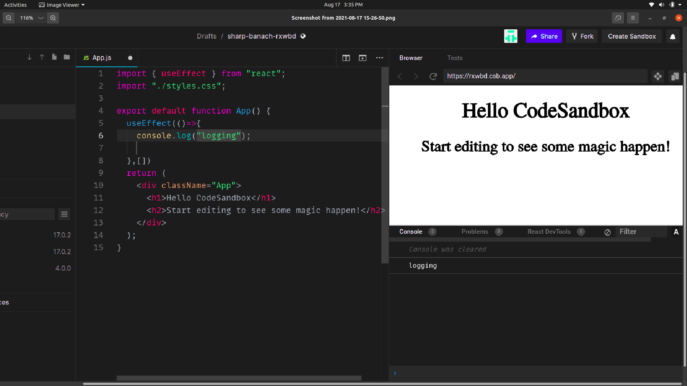
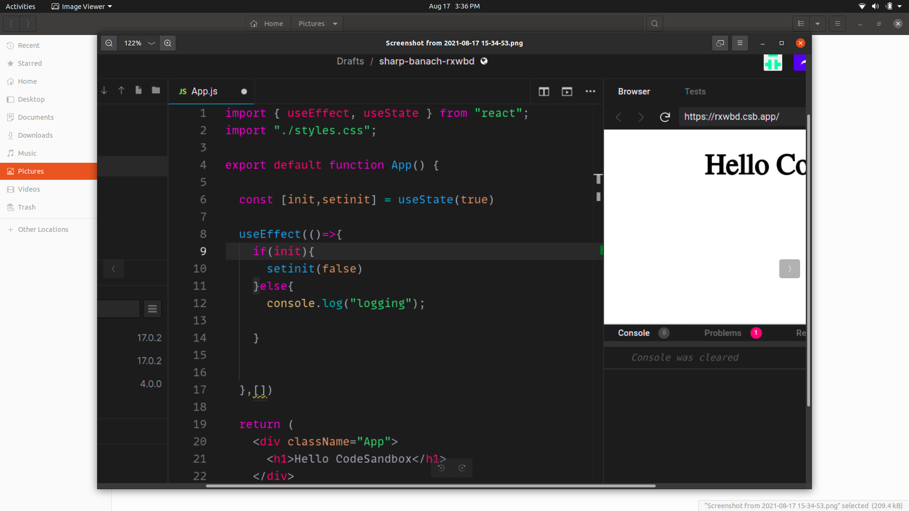

The side effects of useffect Before functional programming got popular
with hooks , we had class components. Functional programming with
hooks makes code clean, readable and reusable and the industry never
looked back. As much as I love functional components , I miss the
lifecyle methods the class components used to provide.
Two of the most used lifecycle methods of class components are
componentWillUpdate, is called just before rendering.
componentDidUpdate ,is called just after rendering.
The
methods were clear and you would use whatever suits your needs
.
Now , if you run the below code you will see the console log in the
chrome console

What if we didn’t want to show the console log on the first
initialization of the app but after initialization we want to show the
log on every render. With class components it would have been pretty
straightforward using the suited method, but not with functional
components. Therefore we have a lill hack. Run the below code .

We know that even with dependencies useffect runs on first
initialization. What we did here is that we created a state init with
default state true, when the app runs for the first time, inside the
useffect it will check if the init is true or false. On the app
initialization the init is default to true it will set init state to
false. Now on every re render it will check init and will skip it as
the init now is false and will go to the else condition